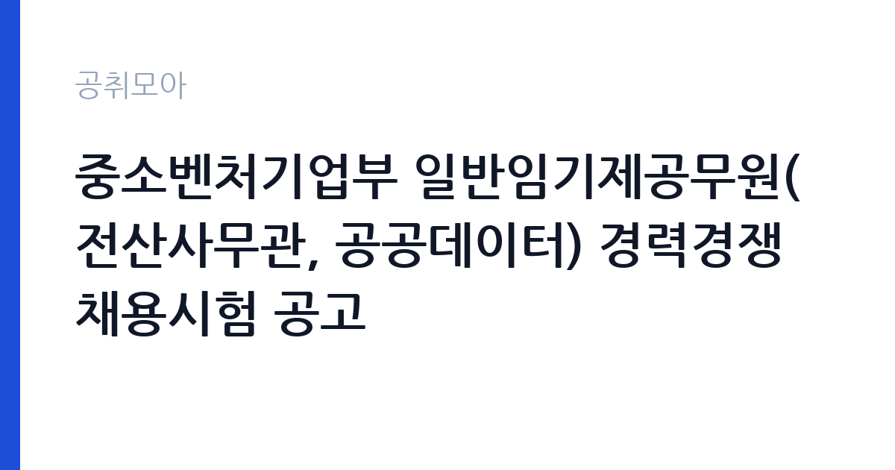

[국가기관] 중소벤처기업부 일반임기제공무원(전산사무관, 공공데이터) 경력경쟁채용시험 공고
중소벤처기업부 · 세종 · 마감 2026-11-09 (D-10) · 출처 나라일터

한눈에 보는 모집 조건
| 기관 | 중소벤처기업부 |
|---|---|
| 공고명 | 중소벤처기업부 일반임기제공무원(전산사무관, 공공데이터) 경력경쟁채용시험 공고 |
| 고용형태 | 임기제 |
| 근무지 | 세종 |
| 게시일 | 2026-10-30 |
| 마감일 | 2026-11-09 (D-10) |
지원자격, 이렇게 읽으세요
- 전산사무관(일반임기제) 1명
- 접수 ~2026-11-09 마감
- 세부 조건은 원문 공고문 확인
임기제공무원은 공무원 신분이지만 임용 기간이 정해져 있습니다. 전문성이 필요한 업무에 채용되며 임용 기간과 연봉등급이 공고문에 명시됩니다. 임기 중에는 공무원으로서의 복무 규정과 이해충돌 방지 의무가 적용됩니다. 이번 공고는 중소벤처기업부가 직접 진행하는 자체 전형입니다. 전문직 채용은 관련 전공과 경력이 핵심 기준입니다. 석사 이상이나 관련 자격, 실무 프로젝트 경력을 요구하는 경우가 많습니다. 사용 가능한 도구와 언어를 구체적으로 제시해야 하며 포트폴리오를 요구하기도 합니다. 계약 기간과 재계약 조건이 명시되므로 원문을 확인하십시오. 이해충돌과 보안 규정 준수 의무가 적용됩니다. 응시 자격 판단이 애매하면 접수 전에 채용 담당 부서로 문의하는 편이 안전합니다. 동일 직무 경력자와 경쟁하게 되므로, 관련 경험이 있다면 증명서에 업무 내용이 구체적으로 적히도록 요청하십시오. 자격 취득 예정자는 채용 공고의 예정자 허용 조항을 먼저 확인해야 합니다. 조항이 없으면 지원 자체가 반려될 수 있습니다.
이 공고의 포인트
이 건은 중소벤처기업부가 같은 시기에 낸 2개 모집분야 가운데 데이터·공간정보 전문직 직무입니다. 다른 직무 공고와 요건이 다르므로 지원 전에 모집분야 표를 대조해야 합니다. 이 공고의 첫 번째 포인트는 고용 형태입니다. 임용 기간이 정해져 있지만 공무원 신분으로 복무 규정이 적용되고, 전문성이 인정되면 재임용이나 유사 직위 지원에 도움이 됩니다. 두 번째는 업무 범위가 명확하다는 점입니다. 데이터·공간정보 전문직 직무로 채용되므로 배치 이후 담당 업무가 크게 흔들리지 않습니다. 세 번째는 근무지입니다. 세종 지역 근무로 수도권 공고에 비해 지원자 분포가 넓지 않아 상대적으로 경쟁이 분산되는 경우가 있습니다. 모집 인원이 적은 만큼 지원자 한 명 한 명의 서류 완성도가 당락에 크게 작용합니다. 다만 선발 인원이 1명으로 많지 않아 자격을 갖춘 지원자가 몰리면 경쟁률이 높아질 수 있습니다.
전형은 어떻게 진행되나
전형은 서류심사와 면접심사를 기본으로 하고 직무에 따라 필기나 실기, 체력검정이 추가됩니다. 서류 단계에서는 응시자격 충족 여부와 제출서류 형식을 확인하며 이 단계에서 탈락하는 지원자가 적지 않습니다. 면접은 직무 이해도와 경험을 확인하는 방식으로 진행되고 발표는 개별 통보나 홈페이지 게시로 이뤄집니다. 최종합격 이후에는 결격사유 조회와 채용 신체검사가 이어지며 이 절차에서 문제가 확인되면 합격이 취소될 수 있습니다. 구체적인 전형 단계와 배점은 공고문에 표로 정리되어 있으니 원문을 기준으로 준비하십시오. 제출서류 원본은 최종 단계에서 다시 요구되는 경우가 있어 사본과 함께 보관하십시오.
원문에서 확인한 전형 방식
[중소벤처기업부 공고 제2026-619호] 중소벤처기업부 일반임기제공무원(전산사무관, 공공데이터) 경력경쟁채용시험 공고 중소벤처기업부에서는 공무원임용시험령 제3조 및 제47조에 따라 우수 인재의 공직 유치를 위한 국가공무원 경력경쟁채용시험을 다음과 같이 공고하여 시행하오니 많은 응시 바랍니다. 2026년 10월 30일 중소벤처기업부 장관 ※ 자세한 내용은 첨부된 공고문을 참고해주시기 바랍니다.
이런 분께 추천해요
- 관련 전공과 실무 프로젝트 경력을 갖춘 분
- 분석 결과를 문서로 정리해 전달할 수 있는 분
- 공공 데이터와 공간정보를 다뤄본 경험이 있는 분
지원 전 체크리스트
- 응시자격 요건과 경력 기준을 충족하는가 — 경력은 증명서로 입증해야 합니다
- 임용 기간과 연봉등급, 근무 시간 조건을 확인했는가
- 제출서류 목록을 모두 준비했는가 — 누락 시 서류 단계에서 탈락합니다
- 접수 마감 2026-11-09 이전에 접수 방식을 확인해 제출했는가
모집 일정과 제출 타이밍
접수 마감은 2026-11-09이고 공고는 2026-10-30에 게시되었습니다. 준비 기간 10일 안에 서류 작성, 증빙 발급, 접수를 모두 마쳐야 하므로 주말을 포함해 일정을 미리 나누는 것이 좋습니다. 특히 경력 기술서나 직무수행계획서를 요구하는 공고는 작성에 시간이 걸리므로 첫날 초안을 잡으십시오. 서류 합격자 발표와 면접 사이 간격이 짧은 경우가 많아 면접 예상 질문은 서류 제출 전에 정리해 두는 편이 유리합니다. 마감 직전에는 접속이 몰리므로 여유를 두고 제출하십시오. 마감 이후에는 어떤 사유로도 접수가 인정되지 않으므로 하루 전 제출을 목표로 하십시오.
직무 이해하기: 국가기관
중소벤처기업부와 지방중소벤처기업청은 중소기업 지원 정책과 창업 지원, 기술 개발 지원 사업을 수행하는 중앙행정기관입니다. 지방청은 지역 기업의 정책 자금과 판로 지원, 컨설팅 사업을 직접 운영합니다. 기간제·공무직 행정실무사는 부서 운영 보조와 민원 응대, 사업 접수·정산 업무를 맡고, 사업 공고 시기에 업무가 집중됩니다. 전문직 업무는 데이터와 시스템을 활용해 기관 사업의 판단을 지원하는 일입니다. 공간정보 분야는 지적도와 위성영상, 측량 데이터를 가공해 농지와 시설 현황을 분석합니다. AI 분야는 업무 데이터를 정리해 모델을 적용하고 결과를 검증하는 절차를 맡습니다. 분석 결과를 보고서와 대시보드로 만들어 담당 부서에 전달합니다. 계약직으로 채용되면 과제 기간과 성과 목표가 정해집니다. 이 직무는 담당 구역이 정해져 있어 근무지에 따라 실제 업무 환경이 달라집니다. 현장 업무와 사무 업무의 비중은 기관의 사업 일정에 따라 계절별로 달라집니다. 이 건의 근무 대상 지역·부서는 원문 기준 '전산사무관, 공공데이터'입니다 원문에 '26-619호] 중소벤처기업부 일반임기제공무원(전산사무관, 공공데이터) 경력경쟁채용시험 공고 중소벤처기업부에서는 공무원임용시험령 제3조 및 제47조에 따라 우수 인재'라는 조건이 명시되어 있습니다.
자기소개서 작성 팁
전문직 지원서는 프로젝트 단위로 성과를 정리하는 것이 효과적입니다. 문제 정의, 사용 데이터, 방법, 결과와 한계를 순서대로 쓰십시오. 지원 기관의 사업 데이터와 연결되는 경험이 있다면 앞부분에 배치하십시오. 계약 기간 동안 달성할 목표를 수치로 제시하면 준비도가 드러납니다. 직무 경험이 많지 않다면 경험의 양보다 과정을 구체적으로 쓰는 편이 낫습니다. 어떤 상황에서 무엇을 판단했고 어떤 결과가 나왔는지 순서대로 서술하면 신뢰가 생깁니다. 지원 동기와 기여 방안은 한 문단씩 짧게 유지하고, 가장 자신 있는 경험에 분량을 몰아주십시오. 마지막 문장은 포부보다 구체적인 실행 계획으로 끝내는 것이 좋습니다.
면접 준비 포인트
면접에서는 수행 프로젝트와 방법론을 구체적으로 확인합니다. 데이터 전처리부터 결과 검증까지 어떤 절차를 거쳤는지, 분석 결과가 실제 의사결정에 어떻게 쓰였는지 묻습니다. 모델의 한계를 어떻게 설명했는지도 질문 대상입니다. 사용 도구와 협업 방식은 명확하게 답하십시오. 답변 시간이 짧게 정해져 있는 경우가 있으므로 핵심 문장을 먼저 말하고 근거를 붙이는 방식이 유리합니다. 모르는 질문에 추측으로 답하면 감점 요인이 되므로, 확인 후 답하겠다고 밝히는 편이 안전합니다.
급여·근무조건 읽는 법
중소벤처기업부의 구체적인 보수 수치는 이 공고 원문의 처우 항목과 보수표에서 확인해야 합니다. 공시 자료로 확인되지 않은 금액은 이 글에서 추정해 제시하지 않습니다. 알리오 2025년 결산 공시 기준 공공기관 전체 일반정규직 1인당 평균보수는 7,376만 9천원, 신입사원 평균초임은 4,031만 6천원입니다(무기계약직 미포함). 전문계약직의 보수는 계약 기간과 연봉 총액이 개별로 정해지며, 기관 내부 기준과 경력에 따라 차이가 납니다. 성과급이나 수당 포함 여부를 확인해야 실제 총액을 알 수 있습니다. 계약 연장 가능성과 전환 조건은 공고문에 명시된 경우가 많으므로 원문에서 확인하십시오. 2026년 적용 최저임금은 시급 10,320원, 월 환산 2,156,880원(주 40시간·209시간 기준)입니다. 고용노동부 고시 제2025-47호로 확정된 금액입니다. 공고문에 금액이 제시되지 않은 항목은 원문 보수표나 처우 설명에서 확인해야 하며 확인되지 않은 수치는 쓰지 않는 것이 원칙입니다. 비교할 때는 월 급여뿐 아니라 상여·명절휴가비·복지포인트·초과근무수당까지 포함한 연간 총액으로 계산하십시오. 기간제라면 계약 기간 동안의 총액을, 무기계약이라면 호봉 상승과 정년까지의 누적 소득을 기준으로 판단하는 편이 정확합니다.
자주 묻는 질문
- 선발 인원은 몇 명인가요?
공고문 기준 1명입니다. 직종별로 인원이 나뉘는 경우가 있으니 모집분야 항목을 함께 확인하십시오. - 근무지는 어디인가요?
세종 지역의 중소벤처기업부 소속 근무지입니다. 세부 주소와 출퇴근 조건은 원문 공고문에서 확인할 수 있습니다. - 보수는 얼마인가요?
채용 신분(임기제공무원)과 기관 임금 규정에 따라 정해지며 구체적인 금액은 공고문 처우 항목에 제시됩니다. 금액이 공개되지 않은 경우에는 원문의 보수표를 확인하십시오.
함께 보면 좋은 공고
[국가기관] 테스트 — 마감 2026-11-11[국가기관] 국무조정실·국무총리비서실 전문임기제공무원 채용 변경공고 — 마감 2026-11-09[국가기관] 육군 전투지위훈련단 BCTP 예비역 장성관찰관(군단 ·사단선임, 군단작전지속지원) 채용 공고 — 마감 2026-11-09출처: 나라일터 공개정보를 바탕으로 공취모아가 정리한 안내글입니다. 모집 조건·일정은 변경될 수 있으니 지원 전 반드시 원문 공고문을 확인하세요. 본 글은 정보 제공용이며 합격을 보장하지 않습니다.